NO WHITE WALLS is the inaugural Yale School of Art Annual exhibition curated by graduate students which
seeks to engage themes of collectivity and challenge the established history of the exhibition space in Western museums and galleries—a history dominated by the white cube formula

As such, this exhibition will focus on artworks that stand free from the walls and incorporate sonic, tactile, and/or olfactory elements Drawing from the lineage of
Rasquache art, the Tropicalia movement, Auto-construcción, and other decolonial approaches to art making, this exhibition will attempt to disrupt the legacy of an educational model influenced by the commercial expectations facing MFA students today

The curators of the exhibition aim to identify, engage, and uplift
MFA practitioners within the Northeast region that are not solely invested in producing objects intended for a particular market or economic exchange

Through this refusal to engage in a market that capitalizes on the exploitation of MFA students, the exhibition will provide an alternative and temporary platform to practitioners that
move beyond siloed forms of knowledge keeping
PARTICIPATING ARTISTS
Bhen Alan

Julie Chen

Bridget DeFranco Daniel Fethke Pravit Rigo Flores

Daniela Gomez Paz Jacq Groves

Scott Lerner Tess Oldfield Anna Ting Möller just practice (Sophie Weston Chien and Amanda Ugorji) London Williams
YALE MFA CURATORS
Salvador Andrade Arévalo (Painting & Printmaking ’22)

Zoila Andrea Coc-Chang (Painting & Printmaking ’22)

Amartya De (Photography ’22)
Miguel Gaydosh (Graphic Design ’22) athena quispe (Painting & Printmaking ’22) Mike Tully (Graphic Design ’22)